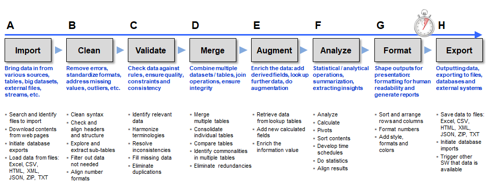

Introduction
B4P, with its full name Beyond Former Expectations is a language which builds on long-lasting experience focussing on handling large amounts of data from different sources and providing efficient means to gather, align an analyze the data quickly and efficiently. The language is based on following key principles aiming to delivering performance, productivity and professionalism:
- Learn the language quickly
- Minimize the number of statements needed to solve challenging data processing problems
- No advanced programming skills required (e.g. object oriented programming)
- Minimize the time required to find solutions for your problems
- B4P delivers maximum processing performance, especially with large data
- The language is easy to read and understand
- Able to access the Internet and negotiate with standard file formats like Excel, HTML, JSON, CSV, etc.
- The language and run-time machine requires no further installation of external libraries
- Focus on the problem to solve, without wasting time coding algorithic details
- A respectable library of procedures and functions, with focus on table data processing, is available
Focus on solving the problems and nothing else:

By experience, successful solutions have been provided already during the first consultation with colleagues who needed solutions for
their data processing needs. They originally expected a cost and time estimation and a project plan for the project in order to approve the
budget for hiring programmers or consultants, and all that ended up not necessary at all because a few lines of code solved the problem
and a lot of money saved.
The full web documentation has been compiled with a B4P program which extracts embedded raw documentation from source code and text files,
creates one master file (JSON) and generates all pages including tables of contents, illustrations, and code examples which are automatically executed
and their results included in the documentation.